Design
Sketches and character
Inspiration studies, the Olis character design, and other preliminary art, all drawn in Procreate.
Hand-painted 2D short film · 2022
A one-minute hand-painted short about a young office worker, a pretty pink car parked outside her building, and the quiet way the things we own come to carry our lives.
Story
The film watches one object, a parked car, and lets its condition tell the story of an owner we never meet.
Olis is an ordinary office worker. On the street below her building sits a pretty pink car, and every so often its little ornaments and decorations change. She never sees the owner, so she reads the car instead, looking forward to each small change and imagining what kind of person would keep it this way.
Part of her starts to hope that one day a car like this might be hers, something small and cared for that quietly says who she is.
Then the changes stop. Dust gathers on the paint and the car sits untouched in the same parking spot, day after day. Eventually a tow company arrives to take it away, and the crew tells her that the owner has passed away.
Nothing is spelled out. The whole story lives in how the car looks from one day to the next, and in that last thing she learns about a stranger she never met.
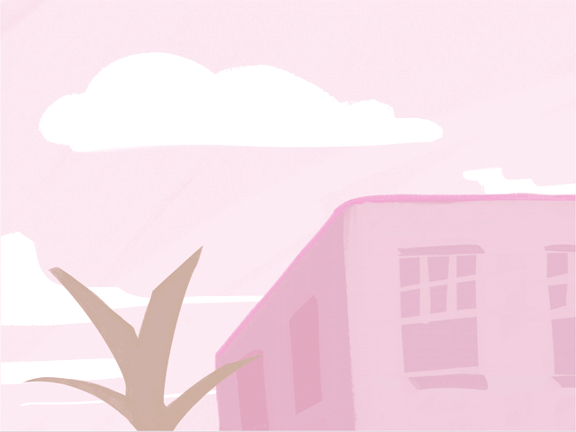
Character
A young office worker, drawn small and round: dark ponytail, yellow top, loose blue trousers, and a shoulder bag she carries home each night. She has no dialogue. Her whole role is to watch the pink car below her building, imagine the owner she never meets, and quietly hope that one day a car like it might be hers.
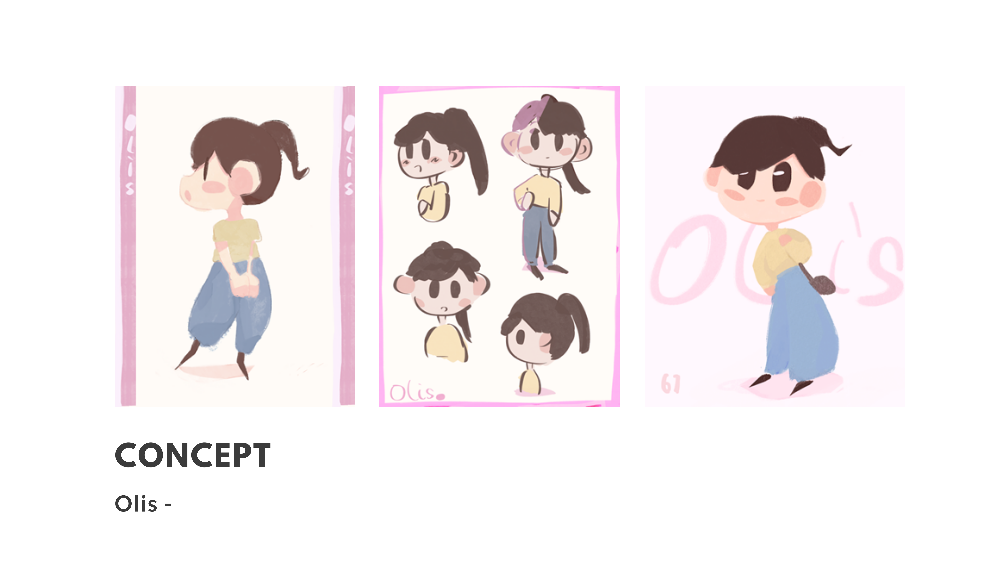
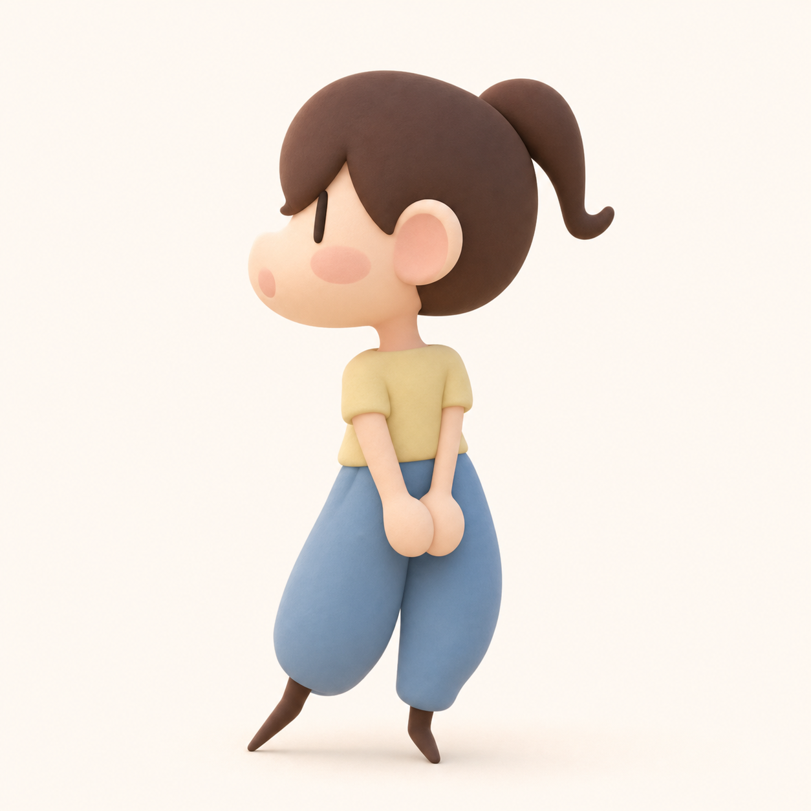
Process
The whole short was made solo in about three weeks: roughly one week of design and storyboarding, then the animation and edit.
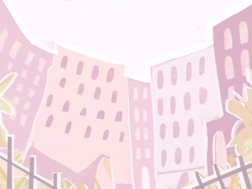
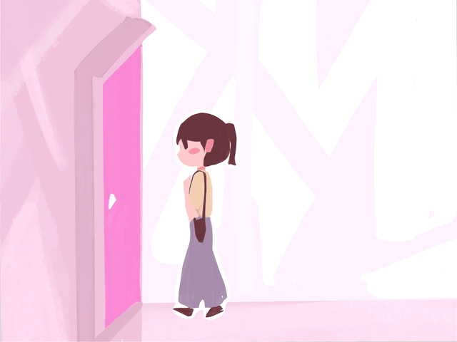
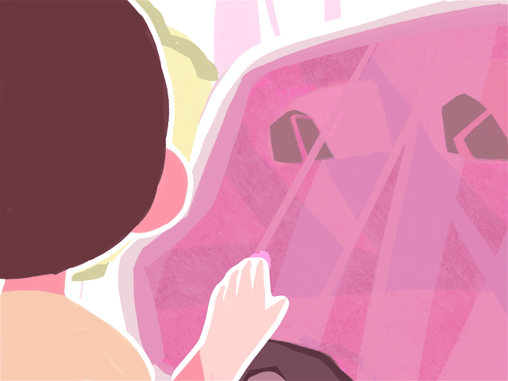
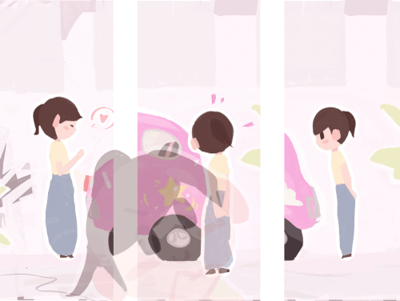
Inspiration studies, the Olis character design, and other preliminary art, all drawn in Procreate.
A full storyboard laying out the short's beats, from the first curious look to the tow at the end.
Characters and objects animated frame by frame in Procreate, then edited, transitioned, and color-graded in After Effects.
Life and death, new and old. A person's life can shape everything they own, and its ending can quietly reach a stranger who only ever watched from a distance. What we keep around us slowly takes on the state of our own lives. Ruxin Liang, director's note, Pink Car (2022)
The Film
Every shot is hand-painted in a single soft-pink palette, so the whole film reads as one continuous place and mood.
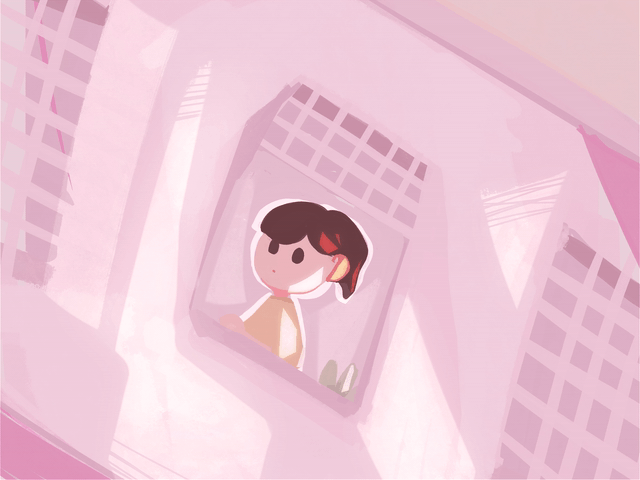
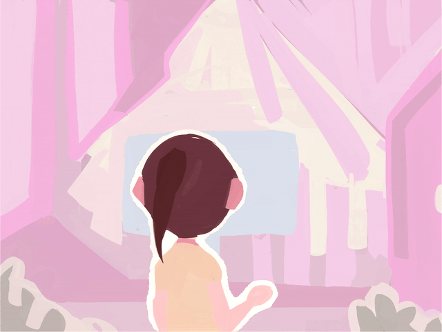
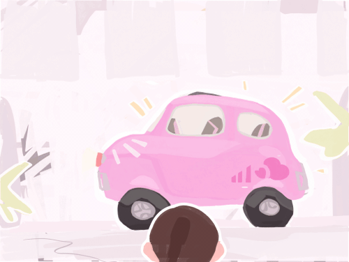
Revisited in 2026
In 2026 the film was reimagined as a soft-felt 3D redesign: Olis and the pink car rebuilt as matte, tactile models in a pink city, alongside new 2D character sheets.
These 2026 redesign images are AI-assisted concept renders, created under the artist's art direction. The 2022 film, its story, and its design are Ruxin Liang's original hand-drawn work.
Establishing shots and interiors rebuilt as tactile 3D sets in the film's palette, the environment and lighting work.
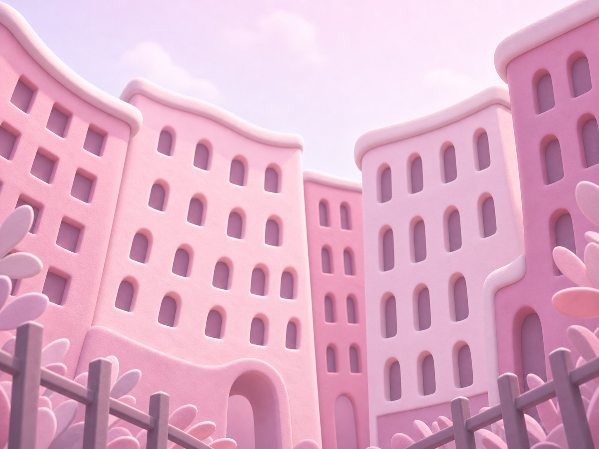
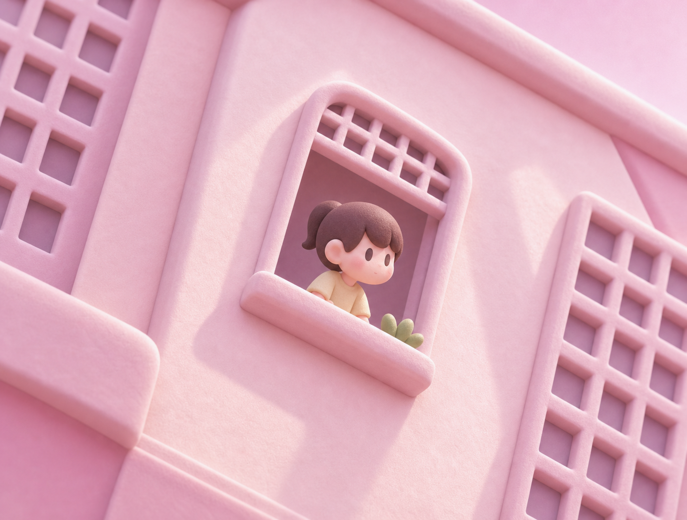
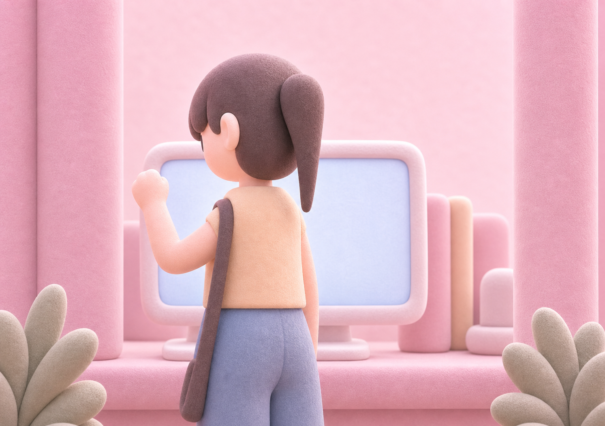
The character and vehicle rebuilt as soft-felt models.
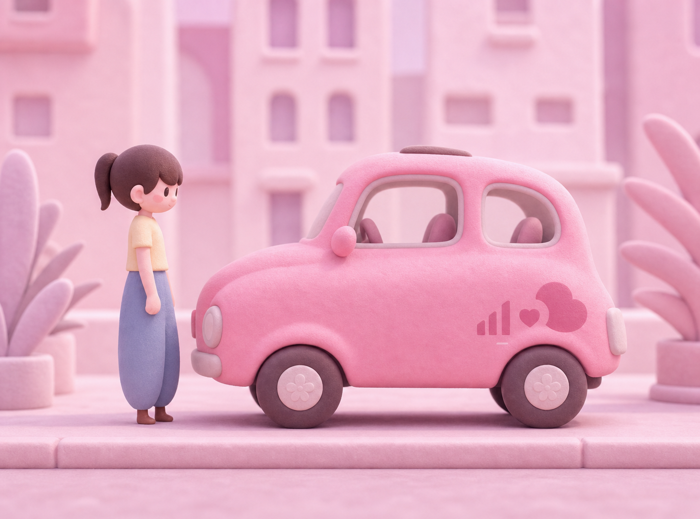
A fresh turnaround, pose set, and expression range drawn for Olis.
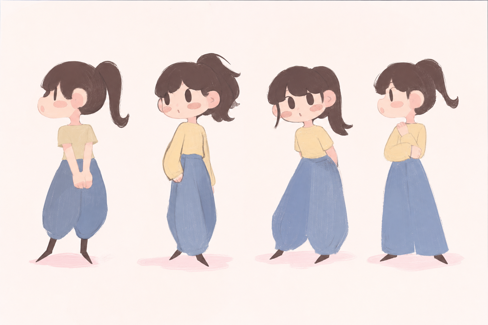
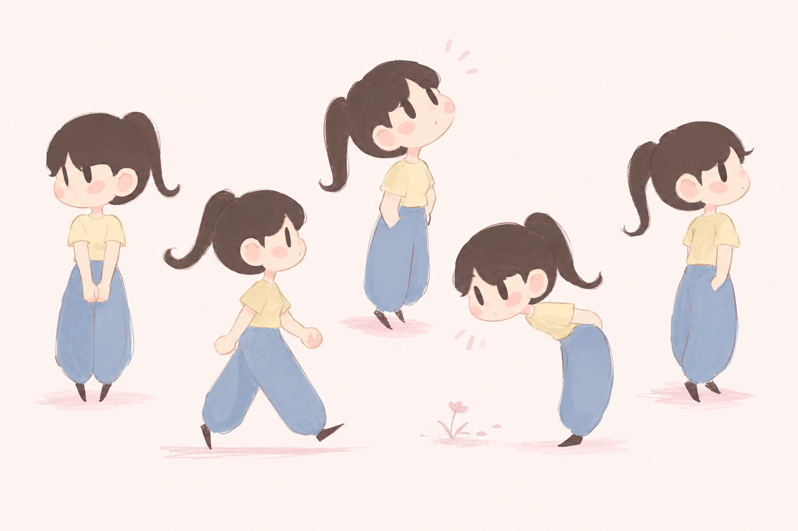
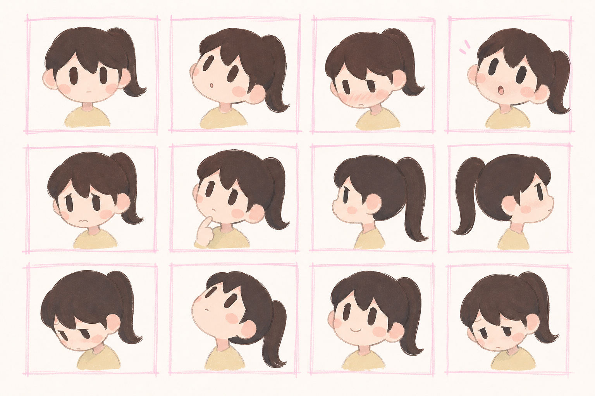
Development
Pink Car began as a complete 2D prototype and is now being rebuilt in 3D, aiming for festivals by 2027.
Original 2D prototype completed: story, character design, visual design, storyboard, animation, and a public concept page.
The 3D redesign begins: surface-aging research, lighting and grooming references, and translation tests from the locked prototype.
Finalize the car and protagonist models, a look bible, a procedural aging setup, and a locked 3D previs sequence.
Complete 3D production, compositing, sound, color, and a festival cut, then a submission package for international animation and short-film festivals.
Contact
Pink Car is a personal short film by Ruxin Liang. More work is on Behance.